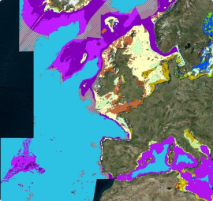
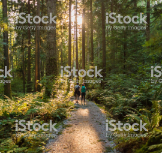

The Natural Environtment provides a wide range of benefits to humans including pollination, managing the flow of nutrients etc. These are referred to as ecosystem services. The amount of these services provided is dependent on the physical environment, the biological species assemblages present and the condition they are in. Deciding how the natural environment is managed is becoming increasingly focused on adjusting the levels of these services and so it is critical to be able to quantify the services and monitor hoe they are changing (e.g. in response to interventions). This approach is known as the ecosystem services approaoch with the overall value and changes in it known as a Natural Capital.
JNCC has been heavily involved in the development of this approach. The organization has deep scientific knowledge of the natural environment and understanding of the benefits if provides allows rapid identification of wich elements of the environment are most important and also identify potential vulnerabilities. JNCC has also developed a range of analytical techniques to quantity and monitor changes these which maximise the use of proxies and modelling to compensate for the often very partial data sources that are available
-

Map natural assets - Knowing where existing natural assets are and their condition making. As well as more traditional sources such as records of species occurrence, JNCC has strong skill in use of satellite data, accoustic and image analysis for benthic marine mapping, integration of standard geographical data source, and integrating these through predictive modelling to generate the best picture of these assets.
-

Assess the value of natural assets - a large and increasing body of scientific research is focused on assessing the ecosystem services that different aspects of the natural environment provide and how these vary uner different conditions. Whilst these can be monetised and this provides a useful framework for consistent integration the relative values and understanding hoe these could be adjusted is often more critical
The majority of JNCC experience has been developed within the UK marine and terrestrial environments but increasingly the organisation is applying these approaches elsewhere internationally including the UK Overseas Territories.